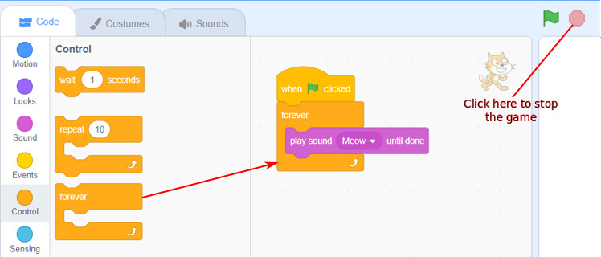

Activity 12
Playing sound continuously
To play sound repeatedly without end, follow these steps:
Steps
1.
Click on the ‘Events’ block menu.
2.
Drag and drop the ‘when clicked’ block on the script area.
3.
Click on the ‘Control’ block menu.
4.
Drag and drop the ‘forever’ block on the specific area.
Attach the forever block to the ‘when clicked’ block as shown in Figure 36.
5.
Click on the ‘Sound’ block menu.
6.
Drag and drop the ‘play sound until done’ block inside the ‘forever’ block.
You will get the blocks as shown in Figure 36.

Figure 36: Using the forever block